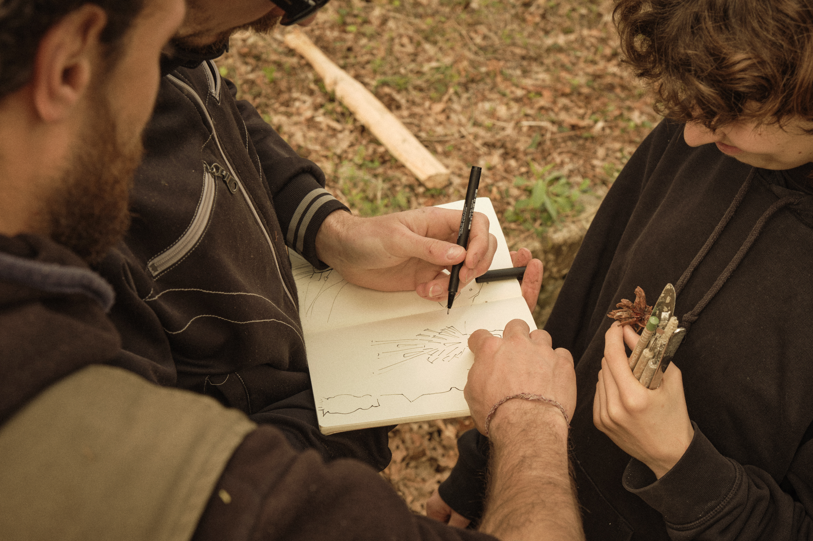
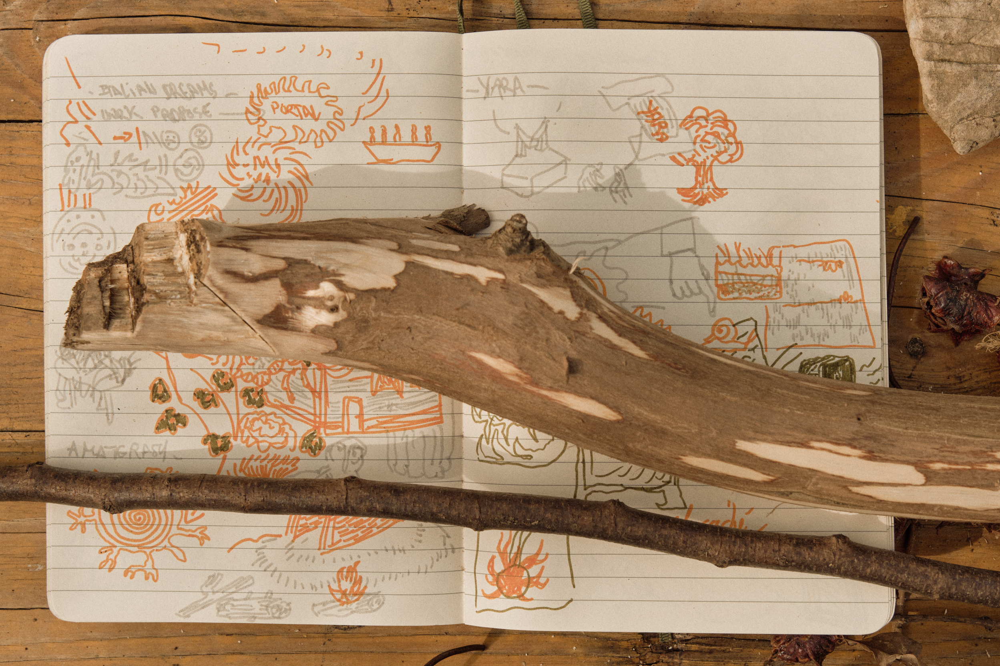

APUA was born in 2025, from the desire to create a collective of artists that share similar artistic affinities to support and enrich one another.
We organise yearly gatherings where we come together to exchange, experiment and create around a common research theme. These gatherings take place in the Natural Park of Montemarcello in Liguria, Italy, hosted by a small organic farm, Azienda Agricola Pian della Chiesa.
Located in a rich natural landscape and standing upon fragments of ancient history, the area offers many raw materials to work with, space to experiment freely, and the chance to unearth stories embedded in this land.
Through these gatherings, we aspire to highlight the rich natural and historical context of the area, and to create continuity with Montemarcello's historic role as an artisitic and intellectual nest, that once welcomed renowned writers and poets.

